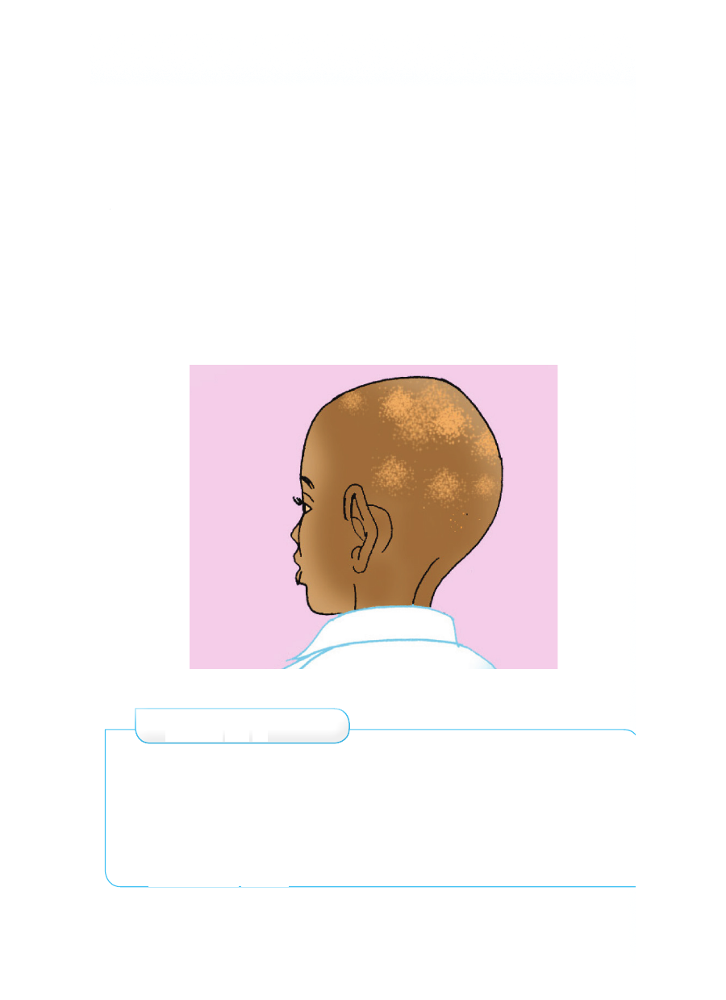

Kwa nini tunasafisha nywele?
Nywele hushika vumbi kwa urahisi. Yafaa nywele zitunzwe
kwa kuoshwa kwa maji safi na sabuni. Pia, zikatwe ili ziwe
fupi na zipendeze. Nywele chafu husababisha harufu mbaya ya
jasho. Vilevile, huweza kuhifadhi wadudu kama chawa. Chawa
hunyonya damu na kusababisha homa. Nywele zisafishwe
kuepuka magonjwa ya mba na mapunye. Nywele zinafaa
kusafishwa kila siku. Pia, tunyoe nywele mara kwa mara.
Tuepuke kuchangia vifaa vya kunyolea nywele. Tukichangia
vifaa tutapata maambukizi ya magonjwa. Magonjwa hayo ni
mba, mapunye na VVU.
Mtoto mwenye mapunye
Zoezi la 4
1. Andika faida nne za kunyoa nywele.
2. Nywele chafu zina madhara gani?
3. Ni mdudu gani hupatikana kwenye nywele chafu?
4. Kuchangia vifaa vya kunyolea nywele kunasababisha
magonjwa gani?